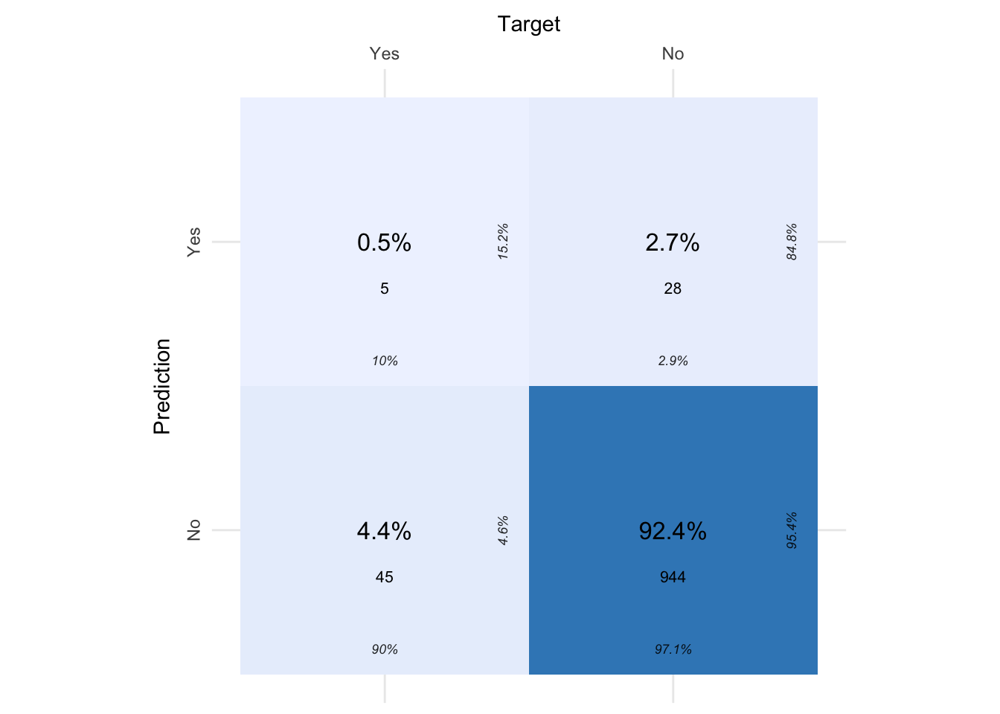
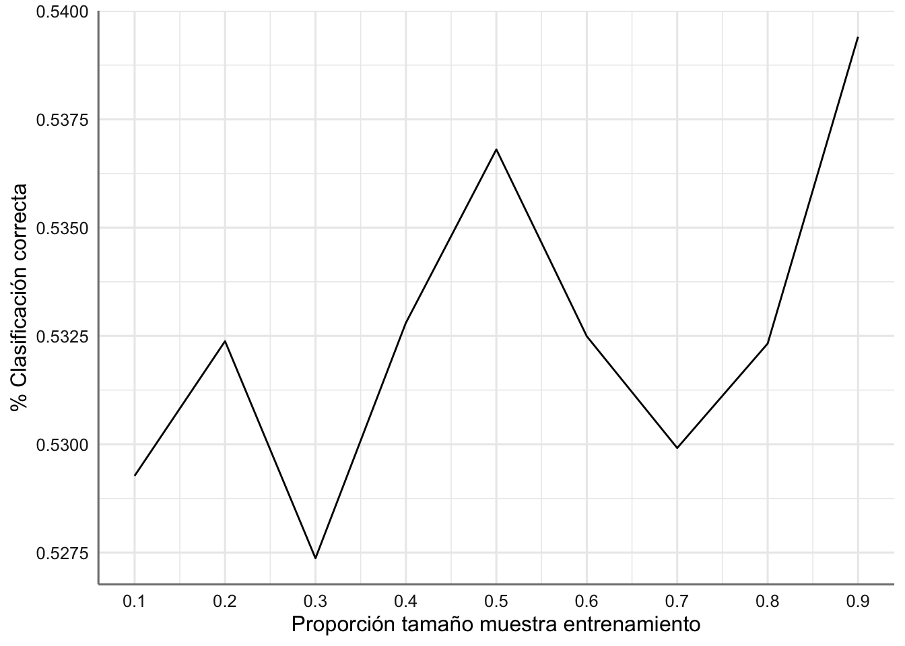
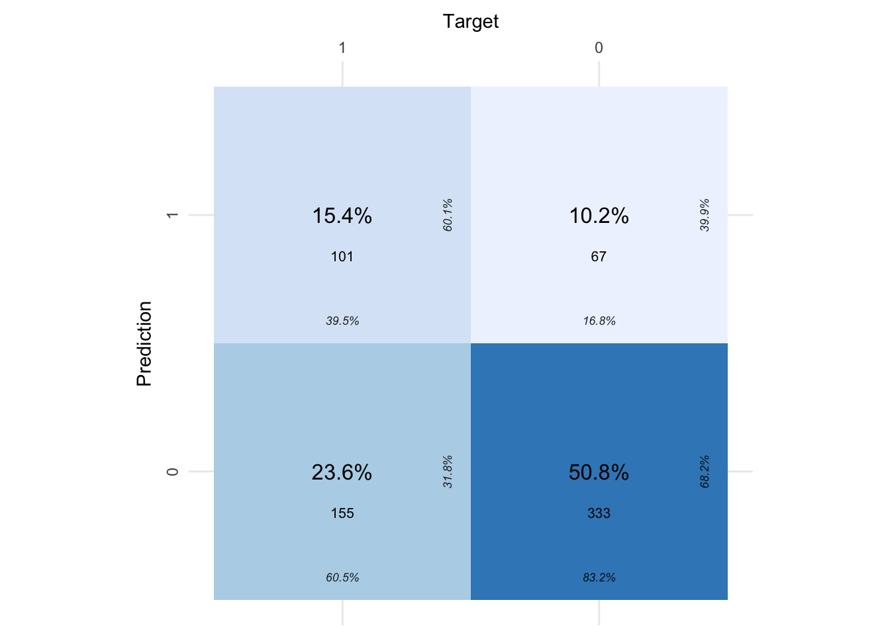
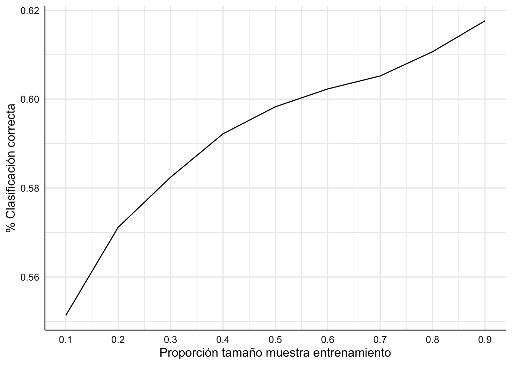
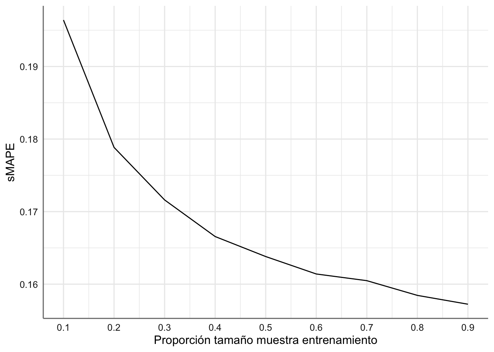

# Paquetes anteriores
library(tidyverse)
library(sjPlot)
library(knitr) # para formatos de tablas
library(skimr)
library(DataExplorer)
library(GGally)
library(gridExtra)
library(ggpubr)
library(cvms)
library(kknn)
library(rpart.plot)
theme_set(theme_sjplot2())
# Paquetes AA
library(mlr3verse)
library(mlr3tuning)
library(mlr3tuningspaces)
library(gbm)
library(RWeka)
library(xgboost)
library(lightgbm)14 Modelos Boosting
El boosting es una técnica de modelado de conjunto que intenta construir un strong learner a partir de un número de weak learner secuenciales, todos basados en el mismo algoritmo de predicción o clasificación. El proceso de construcción del strong learner comienza fijando un modelo inicial sobre los datos de entrenamiento y obteniendo los errores de dicho modelo (errores de predicción o clasificación). A continuación, se construye un segundo modelo que intenta corregir los errores presentes en el primer modelo mediante la asignación de pesos a todos los datos de entrenamiento en función del error cometido en la primera etapa. Este procedimiento continúa y se añaden modelos hasta que se predice correctamente todo el conjunto de datos de entrenamiento o se añade el máximo número de modelos. Finalmente se combinan los resultados de los diferentes modelos secuenciales para obtener el modelo final. Los métodos de boosting más empleados son AdaBoost, Gradient Boosting, XGBoost y LightGBM. Casi todos ellos toman como weak learner basado en árboles de decisión, pero en teoría se pueden utilizar con otro tipo de algoritmos de aprendizaje automático. A continuación podemos ver una imagen del proceso secuencial de construcción para un problema de clasificación:

Antes de pasar a describir los diferentes modelos debemos entender el algoritmo del descenso del gradiente que nos permite construir modelos secuenciales de forma más o menos automática. Las diferentes versiones de este algoritmo nos proporciona los diferentes modelos de boosting que estudiaremos.
14.1 Descenso del gradiente
El término boosting proviene del principal algoritmo que se utiliza como base para el ajuste de los diferentes modelos secuenciales que conforman este tipo de solución. Dicho algoritmo es el conocido como algoritmo de descenso del gradiente (gradient descent algorithm) y es muy utilizado en los algoritmos de optimización usados para minimizar funciones de coste o pérdida. Su aplicación se encuentra muy extendida en diferentes algoritmos de aprendizaje automático.
Dada una función de pérdida \(f\) que depende del parámetro \(\theta\) , y fijada una tasa de aprendizaje \(\lambda\), el algoritmo del descenso del gradiente se estructura de la forma siguiente:
Fijar un valor inicial \(\theta_0\) para el parámetro de interés.
Obtener la derivada parcial de la función con respecto a \(\theta\), y evaluarla en \(\theta_0\) (gradiente descendiente):
\[\bigtriangledown f_{\theta_0} = \left[\frac{\partial f}{\partial \theta} \right ]_{\theta = \theta_0}\]
- Calcular un nuevo valor del parámetro mediante el “descenso” del valor anterior a partir del gradiente obtenido y la tasa de aprendizaje:
\[\theta_1 = \theta_0 - \lambda *\bigtriangledown f_{\theta_0}\]
- Comprobar si el cambio en la actualización del parámetro es inferior a un fijado previamente (llamada criterio de parada), de forma que si es afirmativo el algoritmo se detiene, y en caso contrario se actualiza el gradiente y se pasa a un nuevo valor de \(\theta\).
Este algoritmo se puede generalizar a situaciones más generales con múltiples parámetros. Sin embargo, la mayor dificultad estriba en que no tenemos asegurado alcanzar el mínimo absoluto de la función \(f\), ya que cuando el algoritmo encuentra un mínimo relativo resulta imposible salir de dicho punto.
Por su modo de implementación, el descenso del gradiente puede realizarse de tres modos diferentes para la función de pérdida establecida en cada uno de los algoritmos de aprendizaje automático:
Descenso de gradiente por lotes. Este es un tipo de descenso de gradiente que procesa todas las muestras de entrenamiento en cada iteración del descenso de gradiente. Si el número de muestras de entrenamiento es grande, el descenso de gradiente por lotes es computacionalmente muy caro.
Descenso de gradiente estocástico. Este es un tipo de descenso de gradiente que procesa una muestra de entrenamiento por iteración. Por lo tanto, los parámetros se actualizan incluso después de cada iteración. Por lo tanto, es bastante más rápido que el descenso de gradiente por lotes. Pero de nuevo, cuando el número de muestras de entrenamiento es grande, incluso entonces se procesa sólo una muestra que puede ser una sobrecarga adicional para el sistema ya que el número de iteraciones será bastante grande.
Descenso de gradiente en mini lotes. Este es un tipo de descenso de gradiente que funciona más rápido que el descenso de gradiente por lotes y el descenso de gradiente estocástico. Aquí se procesan \(b\) muestras por iteración donde \(b\) es inferior al tamaño de la muestra de entrenamiento. Así, aunque el número de muestras de entrenamiento sea grande, se procesa en lotes de tamaño \(b\) de una sola vez. Por lo tanto, funciona para los ejemplos de entrenamiento más grandes y también con un menor número de iteraciones.
14.2 Algorirmos Boosting
A continuación se muestran los algoritmos principales que hacen uso del descenso de gradiente para los modelos de conjunto. Casi todos ellos utilizan como modelo base los árboles de decisión. Como en el caso de los algoritmos de bagging mostraremos los aspectos teóricos de cada uno de ellos aplicados a un problema de clasificación, aunque se pueden generalizar a los problemas de regresión de forma inmediata. Para finalizar con cada algoritmo se presenta la función en mlr3 que nos permite el ajuste de dicho modelo.
14.2.1 AdaBoost
Fue el primer algoritmo en hacer uso del boosting en los algoritmos de aprendizaje automático. Si estamos interesados en un problema de clasificación con dos grupos posibles necesitamos como punto de partida:
Un weak learner que sea capaz de predecir la variable respuesta con un porcentaje de acierto ligeramente superior a lo esperado por azar.
Codificar las dos clases de la variable respuesta como +1 y -1.
Un peso inicial e igual para todas las observaciones que forman el set de entrenamiento.
Una vez que estos tres puntos se han establecido, se inicia un proceso iterativo. En la primera iteración, se ajusta el weak learner empleando los datos de entrenamiento y los pesos iniciales (todos iguales). Con el weak learner ajustado y almacenado, se predicen las observaciones de entrenamiento y se identifican aquellas bien y mal clasificadas. Con esta información:
Se actualizan los pesos de las observaciones, disminuyendo el de las que están bien clasificadas y aumentando el de las mal clasificadas.
Se asigna un peso total al weak learner, proporcional al total de aciertos. Cuantos más aciertos consiga el weak learner, mayor su influencia en el conjunto del ensemble.
En la siguiente iteración, se llama de nuevo al weak learner y se vuelve a ajustar, esta vez, empleando los pesos actualizados en la iteración anterior. El nuevo weak learner se almacena, obteniendo así un nuevo modelo para el conjunto. Este proceso se repite \(M\) veces, generando un total de \(M\) weak learners. Para clasificar nuevas observaciones, se obtiene la predicción de cada uno de los weak learners que forman el conjunto y se agregan sus resultados, ponderando el peso de cada uno acorde al peso que se le ha asignado en el ajuste. El objetivo detrás de esta estrategia es que cada nuevo weak learner se centra en predecir correctamente las observaciones que los anteriores no han sido capaces. A continuación se muestra la estructura del algoritmo.
Consideramos \(y\) la variable respuesta, \(X\) el conjunto de variables predictoras, \(N\) número de muestras de entrenamiento, \(M\) número de iteraciones de aprendizaje, \(G_m\) weak learner en la iteración \(m\), \(w_i\) peso de la observación \(i\), y \(\alpha_m\) el peso del weak learner \(m\), de forma que el algoritmo viene dado por:
- Inicializamos los pesos de las observaciones
\[w_i = \frac{1}{N}, \quad i=1,...,N\]
- Para \(m=1\) hasta \(M\):
Ajustar el weak learner \(G_m\) utilizando las muestras de entrenamiento y los pesos \(w_i\), para obtener la predicción \(\hat{y}_i\) de cada \(y_i\)
Calcular el error del weak learner como:
\[err_m = \frac{\sum_{i=1}^N w_i I(y_i \neq \hat{y}_i)}{\sum_{i=1}^N w_i}\]
- Calcular el peso asignado al weak learner \(G_m\):
\[\alpha_m = log\left(\frac{1-err_m}{err_m}\right)\]
- Actualizar los pesos de las observaciones:
\[w_i = w_i exp[\alpha_m I(y_i \neq \hat{y}_i)], \quad i=1,...,N\]
- Construcción del strong learner agregando todos los weak learner obtenidos en el proceso iterativo ponderándolos por su peso:
\[G(x) = sign\left[\sum_{m=1}^M \alpha_m G_m(X)\right]\]
14.2.2 Gradient Boosting
El gradient boosting o refuerzo del gradiente es uno de los algoritmos de aprendizaje automático más populares. Es lo suficientemente potente como para encontrar cualquier relación no lineal entre el objetivo del modelo y las variables predictoras, y tiene una gran facilidad de uso ya que nos permite trabajar con valores perdidos, valores atípicos y valores categóricos de alta cardinalidad sin ningún tratamiento especial. De forma habitual este tipo de algoritmos toman como weak learner los árboles de decisión lo que provoca que muchas veces este algoritmo se conoce como gradient boosting tree. Se basa en un proceso de boosting donde la actualización en cada iteración se realiza mediante el algoritmo del descenso del gradiente.
De forma sencilla el gradient boosting ajusta un primer weak learner \(f_1\) con el que se predice la variable respuesta \(y\), obteniéndose los errores \(y−f_1(x)\). A continuación, se ajusta un nuevo modelo \(𝑓_2\), que intenta predecir los residuos del modelo anterior, en otras palabras, trata de corregir los errores que ha hecho el modelo \(𝑓_1\):
\[f_1(x) \sim y,\qquad f_2(x) \sim y-f_1(x)\]
En la siguiente iteración, se calculan los residuos de los dos modelos de forma conjunta \(𝑦−𝑓_1(𝑥)−𝑓_2(𝑥)\), los errores cometidos por \(𝑓_1\) y que \(𝑓_2\) no ha sido capaz de corregir, y se ajusta un tercer modelo \(𝑓_3\) para tratar de corregirlos:
\[f_3(x) \sim y-f_1(x)-f_2(x)\]
Este proceso se repite \(M\) veces, de forma que cada nuevo modelo minimiza los errores del anterior, y construimos el strong learner como:
\[y \sim f_1(x) + f_2(x) + ... + f_M(x)\]
Dado que el objetivo de Gradient Boosting es ir minimizando los residuos iteración a iteración, es susceptible de sobreajuste. Una forma de evitar este problema es emplear la tasa de aprendizaje (\(\lambda\)) sobre cada weak learner en el proceso de boosting, de forma que el predictor final viene dado por:
\[F(x) = \lambda f_1(x) + \lambda f_2(x) + ... + \lambda f_M(x)\] ### Gradient Boosting en mlr3 {#sec-140.2.4}
14.2.3 XGBoost
El algoritmo más famoso que utiliza como base el gradient boosting es el extreme gradient boosting (XGBosst) que estudiamos a continuación. Todos los aspectos técnicos de este algoritmo se pueden consultar aquí.
Antes de comentar las diferencias existentes entre gradient boosting y extreme gradient boosting veamos cuales son su puntos en común:
Algoritmos basados en árboles: tanto XGBoost como Gradient Boosting utilizan árboles de decisión como estimadores base.
Objetivo de predicción: los árboles se construyen utilizando los residuos, no las etiquetas de clase reales. Por lo tanto, a pesar de que nos centramos en problemas de clasificación, los estimadores base de estos algoritmos son árboles de regresión y no árboles de clasificación. Esto se debe a que los residuos son continuos y no discretos. Al mismo tiempo, sin embargo, algunas de las fórmulas que se presentan a continuación son únicas para la clasificación, así que no podemos asumir su aplicación exactamente igual a los problemas de regresión.
Profundidad del árbol: ambos algoritmos permiten controlar el tamaño máximo de los árboles para minimizar el riesgo de sobreajuste de los datos.
Métodos de conjunto: similares a Random Forest o AdaBoost, estos algoritmos construyen muchos árboles en el proceso. Al final, la predicción final se basa en todos los árboles.
Tasa de aprendizaje: el valor de cada árbol se escala por la tasa de aprendizaje. Esto permite que el algoritmo tenga una mejora más gradual y constante en cada paso.
A continuación se muestra una imagen resumen del funcionamiento de XGBoost:
 Las diferencias entre ambos algoritmos se basan en la construcción de los diferentes árboles de decisión secuenciales.
Las diferencias entre ambos algoritmos se basan en la construcción de los diferentes árboles de decisión secuenciales.
Gradient Boosting utiliza un método estándar para construir árboles de regresión, en el que se utiliza una métrica típica como el MSE (error cuadrático medio) u otra similar para determinar la mejor división del árbol. El algoritmo calcula el MSE para cada una de las posibles divisiones de nodos y luego elige la que tenga el menor MSE como la que se utilizará en el árbol.
Por el contrario, XGBoost utiliza su propio método de construcción de árboles en el que la puntuación de similitud y la ganancia determinan las mejores divisiones de nodos. La puntuación de similitud o similarity score(SS) se define como:
\[SS = \frac{\left(\sum_{i=1}^n r_i \right)^2}{\sum_{i=1}^n \left[pp_i(1-pp_i)\right] + \lambda}\]
donde:
\(r_i\) son los residuos o diferencia entre el valor observado actual y el valor predicho.
\(pp_i\) es la probabilidad previa o probabilidad de un evento calculada en un paso anterior. Se supone que la probabilidad inicial es de 0.5 para cada observación, que se utiliza para construir el primer árbol. Para cualquier árbol posterior, la probabilidad anterior se recalcula basándose en la predicción inicial y en las predicciones de todos los árboles anteriores.
\(\lambda\) es un parámetro de regularización. Su aumento reduce desproporcionadamente la influencia de las hojas pequeñas (las que tienen pocas observaciones) mientras que sólo tiene un impacto menor en las hojas más grandes (las que tienen muchas observaciones).
Una vez que tenemos la puntuación de similitud para cada hoja, calculamos la ganancia (gain) utilizando la siguiente fórmula:
\[Gain = SS_{i} + SS_{d} - SS_{r},\]
donde \(SS_i\), \(SS_d\), y \(SS_r\) son las puntuaciones de similitud de la división de la rama izquierda, de la división de la rama derecha, y el nodo raíz del que parten ambas ramas respectivamente. La división del nodo con la mayor ganancia se elige como la mejor división del árbol.
La introducción de \(\lambda\) en el proceso de evaluación de SS es la principal diferencia con gradient boosting ya que en este último el SS se calcula sin añadir ese término de regularización.
Además de utilizar su propia manera de construir y podar árboles, XGBoost también tiene varias optimizaciones incorporadas para hacer el entrenamiento más rápido cuando se trabaja con conjuntos de datos enormes. He aquí algunas de las principales:
Algoritmo Greedy aproximado - utiliza cuantiles ponderados cuando busca la mejor división de nodos en lugar de evaluar cada división posible.
Aprendizaje paralelo: puede dividir los datos en conjuntos de datos más pequeños para ejecutar procesos en paralelo.
Sparsity-Aware Split Finding - cuando tiene algunos datos perdidos, calcula Gain poniendo las observaciones con valores perdidos en la hoja izquierda. A continuación, hace lo mismo colocándolas en la hoja de la derecha y elige el escenario que produce una mayor ganancia.
Acceso consciente del efectivo - XGBoost utiliza la memoria caché de la CPU para almacenar los gradientes y así poder calcular las puntuaciones de similitud más rápidamente.
14.2.4 LightGBM
LightGBM, abreviatura de light gradient-boosting machine, es un algoritmo que toma como base el gradient boosting, y que fue desarrollado originalmente por Microsoft. Utiliza como modelo de partida los árboles de decisión y se utiliza para la clasificación y otras tareas de aprendizaje automático cuando el conjunto de la muestra de entrenamiento es muy grande. Sus puntos fuertes son la mejora en el rendimiento y la escalabilidad. LightGBM amplía el algoritmo de gradient boosting añadiendo un tipo de selección automática de predictoras centrándose en la evolución del algoritmo hacia las ramas de árbol de decisión con mayores gradientes. Esto puede dar lugar a una gran aceleración del entrenamiento y a una mejora del rendimiento predictivo.
LightGMB posee muchas de las ventajas de XGBoost como la optimización dispersa, el entrenamiento paralelo, las funciones de pérdida múltiples, la regularización, el bagging y la detención temprana. Una de las principales diferencias entre ambos algoritmos es la construcción de los árboles. LightGBM no construye un árbol por niveles, fila por fila, como hacen la mayoría de las implementaciones, sino que lo hace por hojas. Además, LightGBM no utiliza el algoritmo de aprendizaje de árbol de decisión basado en la ordenación, que busca el mejor punto de división en valores de características ordenados, como hacen XGBoost u otras implementaciones. En su lugar, LightGBM implementa un algoritmo de aprendizaje de árbol de decisión basado en un histograma altamente optimizado, que ofrece grandes ventajas tanto en eficiencia como en consumo de memoria. El algoritmo LightGBM utiliza dos técnicas novedosas llamadas Gradient-Based One-Side Sampling (GOSS) y Exclusive Feature Bundling (EFB) que permiten que el algoritmo se ejecute más rápidamente manteniendo un alto nivel de precisión.
El muestreo unilateral basado en el gradiente, o GOSS por sus siglas en inglés, es una modificación del método gradient boosting que centra la atención en aquellas muestras de entrenamiento que dan lugar a un gradiente mayor, lo que a su vez acelera el aprendizaje y reduce la complejidad computacional del método.
La agrupación de rasgos exclusivos, o EFB por sus siglas en inglés, es un método para agrupar rasgos dispersos (en su mayoría nulos) mutuamente excluyentes, como los niveles de variables categóricas que han sido codificadas mediante hot-encoding. Como tal, es un tipo de selección automática de características.
Juntos, estos dos modificaciones dentro del algoritmo de gradiente boosting pueden acelerar el tiempo de entrenamiento del algoritmo hasta 20 veces.
14.3 Algortimos Boosting en mlr3
A continuación se muestran las funciones principales para la obtención de los algoritmos de boosting presentados.
14.3.1 AdaBoost
Por el momento este algoritmo solo se encuentra disponible para tareas de clasificación mediante la función classif.AdaBoostM1 del paquete mlr3extralearners. Para su uso es necesario tener instalada la librería RWeka. Los hiperparámetros más relevantes para este modelo son:
P: Porcentaje de peso masa en el que basar el entrenamiento. Por defecto toma el valor100.Q: Si se usa remuestreo para el boosting. Por defecto el valor esFalseS: Semilla aleatoria. Por defecto toma el valor1.I: Número de iteraciones. Por defecto se establece el valor10.W: Tipo de weak learner utiliza como modelo de base. Por defecto se usan árboles de decisión.
14.3.2 Gradient Boosting
Los algoritmos principales para gradient boosting en mlr3 son classif.gbm para las tareas de clasificación, y regr.gbm para tareas de regresión, que se encuentran disponibles en el paquete mlr3extralearners. Para poder utilizarlos es necesario tener instalada la librería gbm.
Los parámetros más relevantes para ambas funciones son:
distribution: cadena de caracteres que especifica el nombre de la distribución a utilizar o una lista con un nombre de componente que especifica la distribución y cualquier parámetro adicional necesario. Para tareas de clasificación las opciones disponibles sonbernoulli(target con respuestas 0-1),adaboost(utiliza la función de pérdida exponencial de Adaboost para variables 0-1),huberized(función de pérdida de huber para variables 0-1),multinomial(para respuestas tipo factor.). Por defecto se utiliza el valorbernouilli. Para tareas de regresión las opciones disponibles songaussian(donde se utiliza la función de pérdida cuadrática),laplace(función de pérdida del valor absoluto),poisson(para respuestas que son conteos), ytdist(para usar la función de pérdida basada en la distribución t). la opción por defecto esgaussian.n.tress: número de árboles de decisión utilizados como weak learner. Por defecto es valor es100.interaction.depth: Número entero que especifica la profundidad máxima de cada árbol. El valor por defecto es1.n.minobsinnode: Número mínimo de observaciones en los nodos terminales en los árboles de decisión. El valor por defecto es10.shrinkage: Tasa de aprendizaje. Por defecto toma el valor0.001.bag.fraction: fracción de las observaciones del conjunto de entrenamiento seleccionadas aleatoriamente para proponer el siguiente árbol de la expansión. Valor por defecto igual a 0.5train.fraction: Las primeras observaciones detrain.fraction*nrows(data)se utilizan para ajustar el gbm y el resto se utiliza para calcular estimaciones fuera de muestra de la función de pérdida. El valor por defecto es1.cv.folds: Número de validaciones cruzadas consideradas. Por defecto se toma el valor0.n.cores: Número de procesadores utilizados. Por defecto se toma el valor1.
14.3.3 XGBoost
Los algoritmos principales para XGBoost (extrem gradient boosting) en mlr3 son classif.xgboost para las tareas de clasificación, y regr.xgboost para tareas de regresión, que se encuentran disponibles en el paquete mlr3extralearners. Para poder utilizarlos es necesario tener instalada la librería xgboost. La mayor dificultad con estas dos funciones es la gran cantidad de hiperparámetros disponibles para su ajuste. Los más interesantes son:
eta: que controla la tasa de aprendizaje, y que por defecto es igual a0.3.gamma: reducción mínima de pérdida requerida para realizar una partición adicional en un nodo de hoja del árbol. Cuanto mayor, más conservador será el algoritmo. El valor por defecto es 0.lambda: parámetro de regularización. El valor por defecto es1.
14.3.4 LightGBM
Los algoritmos principales para LightGBM en mlr3 son classif.lightgbm para las tareas de clasificación, y regr.lightgbm para tareas de regresión, que se encuentran disponibles en el paquete mlr3extralearners. Para poder utilizarlos es necesario tener instalada la librería lightgbm. Este algoritmo tiene una cantidad inmensa de hiperparámetros que nos describiremos. Se puede consultar este enlace. Tal vez uno de los más relevantes es early_stopping que os permite indicar si debemos realizar parada temprana para evitar sobre ajuste.
Dada la gran cantidad de hiperparámetros que involucran la mayoría de estos modelos en las aplicaciones que presentamos a continuación utilizaremos solo las opciones por defecto, sin búsqueda del óptimo.
14.4 Aplicaciones
En este apartado vamos a utilizar los bancos de datos del tema anterior para ejemplificar el uso de los algoritmos de boosting. Antes de presentar los bancos de datos de nuevo, cargamos todas las librerías necesarias así como las necesarias para los diferentes algoritmos de boosting.
14.4.1 Bancos de datos
Para ejemplificar el uso de los modelos de bagging básicos vamos a utilizar tres bancos de datos: Stroke, Water Potability, y Housing in California que se pueden consultar en el tema 4. De los tres con el único con el que no hemos trabajado hasta ahora es Water Potability. A continuación se muestra el código necesario para la carga de cada uno de esos bancos de datos, y la creación de la tarea correspondiente. Los dos primeros corresponden a problemas de clasificación mientras que el último se corresponde con un problema de regresión.
14.4.1.1 Stroke
El código para este banco de datos aparece a continuación. Para poder ejecutar todos los modelos debemos convertir la respuesta en variable 1-0.
14.4.1.2 Water Potability
El código para crear la tares es:
14.4.1.3 Housing in California
Cargamos los datos correspondientes:
14.4.2 Modelos
Puesto que los modelos a considerar quedan todos englobados dentro de los algoritmos de boosting, vamos a diseñar un análisis conjunto sobre todos ellos haciendo uso de las funciones benchmark() y benchmark_grid(). Para cada banco de datos estableceos los diferentes modelos de aprendizaje y seleccionamos el que mejor funciona en cada caso. Para ello hemos de tener en cuenta que no todos ellos se pueden utilizar. Por ejemplo xgboost no permite predictoras de tipo factor con lo que una forma de abordar esa situación es codificando los factores para tener solo variables numéricas. En nuestro caso vamos a considerar los algoritmos de AdaBoost, XGBoost, y lightGBM para problemas de clasificación, y GBM, XGBoost, y lightGBM para problemas de regresión.
14.4.2.1 Stroke
Al tratarse de un problema de clasificación podemos considerar los cuatro algoritmos presentados. A continuación se detalla el código para poder implantarlos. En cada uno de ellos se consideran las tareas de preprocesamiento correspondientes. En este caso consideramos todas las tareas para poder comparar con los resultado que proporcionarían otro tipo de modelos. En este caso el modelo classif.gbm no se puede ajustar, aunque se muestra el código correspondiente.
# Preprocesamiento
pp_stroke =
po("scale", param_vals = list(center = TRUE, scale = TRUE)) %>>%
po("imputemedian", affect_columns = selector_type("numeric")) %>>%
po("encode", param_vals = list(method = "one-hot"))
# Modelo de aprendizaje AdaBoost
# ==============================
lrn1 = lrn("classif.AdaBoostM1")
stroke_adaboost = as_learner(pp_stroke %>>% lrn1)
# Modelo de aprendizaje XGBoost
# =======================================
lrn2 = lrn("classif.xgboost")
stroke_xgboost = as_learner(pp_stroke %>>% lrn2)
# Modelo de aprendizaje lightGBM
# =======================================
lrn3 = lrn("classif.lightgbm")
stroke_lightgbm = as_learner(pp_stroke %>>% lrn3)Definimos el proceso de remuestreo necesario para la combinación de modelos y el proceso de combinación de todos los modelos definidos:
Podemos ver ahora los resultados obtenidos con cada algoritmo:
Tanto el modelo xgboost como lightgbm son os que proporcionan mejores resultados del porcentaje de clasificación ponderado. En cualquier caso los resultados no mejoran significativamente los resultados obtenidos hasta ahora para este banco de datos. Vamos a intentar optimizar el modelo xgboost utilizando el espacio de búsqueda definido el la librería mlr3tuningspaces pero integrándolo manualmente. Para ello utilizamos los valores de búsqueda definidos en https://mlr3tuningspaces.mlr-org.com/reference/mlr_tuning_spaces_default.html.
boost_classif_stroke = lrn("classif.xgboost",
eta = to_tune(1e-04, 1, logscale = TRUE),
nrounds = to_tune(1,5000),
max_depth = to_tune(1,20),
colsample_bytree = to_tune(0.1,1),
colsample_bylevel = to_tune(0.1,1),
lambda = to_tune(1e-03, 1000, logscale = TRUE),
alpha = to_tune(1e-03, 1000, logscale = TRUE),
subsample = to_tune(0.1, 1)
)
gr_stroke = pp_stroke %>>% boost_classif_stroke
gr_stroke = GraphLearner$new(gr_stroke)
# Fijamos semilla para reproducibilidad del proceso
set.seed(123)
# Definimos instancia de optimización fijando el número de evaluaciones
instance = tune(
tuner = tnr("random_search"),
task = tsk_stroke,
learner = gr_stroke,
resampling = rsmp("cv", folds = 3),
measures = msr("classif.bacc"),
term_evals = 50
)Podemos ver el resultado del proceso de optimización con:
El porcentaje de clasificación correcta ha alcanzado el 53.85 que es el valor más alto obtenido hasta ahora para este banco de datos. Podemos analizar con más detalle este modelo:
# Modelo de aprendizaje
boost_classif_stroke = lrn("classif.xgboost",
eta = instance$result_x_domain$classif.xgboost.eta,
nrounds = instance$result_x_domain$classif.xgboost.nrounds,
max_depth = instance$result_x_domain$classif.xgboost.max_depth,
colsample_bytree = instance$result_x_domain$classif.xgboost.colsample_bytree,
colsample_bylevel = instance$result_x_domain$classif.xgboost.colsample_bylevel,
lambda = instance$result_x_domain$classif.xgboost.lambda,
alpha = instance$result_x_domain$classif.xgboost.alpha,
subsample = instance$result_x_domain$classif.xgboost.subsample
)
gr_stroke = pp_stroke %>>% boost_classif_stroke
gr_stroke = GraphLearner$new(gr_stroke)
# División de muestras
set.seed(432)
splits = mlr3::partition(tsk_stroke, ratio = 0.8)
tsk_train_stroke = tsk_stroke$clone()$filter(splits$train)
tsk_test_stroke = tsk_stroke$clone()$filter(splits$test)
# Entrenamiento del modelo
gr_stroke$train(tsk_train_stroke)Obtenemos ahora las predicciones del modelo y la matriz de confusión
# Predicción de la muestra de entrenamiento y validación
pred_train = gr_stroke$predict(tsk_train_stroke)
pred_test = gr_stroke$predict(tsk_test_stroke)
# scores de validación
measures = msr("classif.bacc")
# Muestra de entrenamiento
pred_train$score(measures)classif.bacc
1 classif.bacc
0.5355967 # matriz de confusión
cm = confusion_matrix(pred_test$truth, pred_test$response)
plot_confusion_matrix(cm$`Confusion Matrix`[[1]]) 
El porcentaje de clasificación sobre la muestra de validación es del 53.55%. El resultado de la matriz de confusión es algo superior al de otros modelos propuestos anteriormente. Además, en este caso si clasificamos algunas muestras con stroke dado que originalmente provenían de ese grupo.
Para finalizar el estudio de este modelo es necesario estudiar la validez de la solución y valorar la curva de aprendizaje correspondiente:
# Fijamos semilla
set.seed(135)
# Definimos proceso de validación cruzada kfold con k=10
resamp = rsmp("cv", folds = 10)
# Remuestreo
rr = resample(tsk_stroke, gr_stroke, resamp, store_models=TRUE)INFO [19:08:37.264] [mlr3] Applying learner 'scale.imputemedian.encode.classif.xgboost' on task 'stroke' (iter 1/10)
INFO [19:08:42.025] [mlr3] Applying learner 'scale.imputemedian.encode.classif.xgboost' on task 'stroke' (iter 2/10)
INFO [19:08:46.841] [mlr3] Applying learner 'scale.imputemedian.encode.classif.xgboost' on task 'stroke' (iter 3/10)
INFO [19:08:51.936] [mlr3] Applying learner 'scale.imputemedian.encode.classif.xgboost' on task 'stroke' (iter 4/10)
INFO [19:09:03.915] [mlr3] Applying learner 'scale.imputemedian.encode.classif.xgboost' on task 'stroke' (iter 5/10)
INFO [19:09:09.840] [mlr3] Applying learner 'scale.imputemedian.encode.classif.xgboost' on task 'stroke' (iter 6/10)
INFO [19:09:21.554] [mlr3] Applying learner 'scale.imputemedian.encode.classif.xgboost' on task 'stroke' (iter 7/10)
INFO [19:09:34.937] [mlr3] Applying learner 'scale.imputemedian.encode.classif.xgboost' on task 'stroke' (iter 8/10)
INFO [19:09:40.236] [mlr3] Applying learner 'scale.imputemedian.encode.classif.xgboost' on task 'stroke' (iter 9/10)
INFO [19:09:47.936] [mlr3] Applying learner 'scale.imputemedian.encode.classif.xgboost' on task 'stroke' (iter 10/10)| Name | rr$score(measures) |
| Number of rows | 10 |
| Number of columns | 9 |
| Key | NULL |
| _______________________ | |
| Column type frequency: | |
| character | 3 |
| list | 4 |
| numeric | 2 |
| ________________________ | |
| Group variables | None |
Variable type: character
| skim_variable | n_missing | complete_rate | min | max | empty | n_unique | whitespace |
|---|---|---|---|---|---|---|---|
| task_id | 0 | 1 | 6 | 6 | 0 | 1 | 0 |
| learner_id | 0 | 1 | 41 | 41 | 0 | 1 | 0 |
| resampling_id | 0 | 1 | 2 | 2 | 0 | 1 | 0 |
Variable type: list
| skim_variable | n_missing | complete_rate | n_unique | min_length | max_length |
|---|---|---|---|---|---|
| task | 0 | 1 | 1 | 51 | 51 |
| learner | 0 | 1 | 10 | 38 | 38 |
| resampling | 0 | 1 | 1 | 20 | 20 |
| prediction | 0 | 1 | 10 | 20 | 20 |
Variable type: numeric
| skim_variable | n_missing | complete_rate | mean | sd | p0 | p25 | p50 | p75 | p100 | hist |
|---|---|---|---|---|---|---|---|---|---|---|
| iteration | 0 | 1 | 5.50 | 3.03 | 1.00 | 3.25 | 5.50 | 7.75 | 10.00 | ▇▇▇▇▇ |
| classif.bacc | 0 | 1 | 0.54 | 0.04 | 0.49 | 0.50 | 0.54 | 0.57 | 0.59 | ▇▁▅▇▅ |
El valor medio del porcentaje de clasificación correcta ponderada se sitúa en el 53.9% con una desviación típica del 3%. Aunque los resultados son bastante estables el rango de valores abarca modelos con peores porcentajes que los vistos anteriormente. Por último representamos la curva de aprendizaje.
ptr = seq(0.1, 0.9, 0.1)
lcurve = learningcurve(tsk_stroke, gr_stroke, "classif.bacc", ptr = ptr, rpeats = 10)INFO [19:10:02.517] [mlr3] Applying learner 'scale.imputemedian.encode.classif.xgboost' on task 'stroke' (iter 1/10)
INFO [19:10:06.520] [mlr3] Applying learner 'scale.imputemedian.encode.classif.xgboost' on task 'stroke' (iter 2/10)
INFO [19:10:11.111] [mlr3] Applying learner 'scale.imputemedian.encode.classif.xgboost' on task 'stroke' (iter 3/10)
INFO [19:10:14.044] [mlr3] Applying learner 'scale.imputemedian.encode.classif.xgboost' on task 'stroke' (iter 4/10)
INFO [19:10:17.295] [mlr3] Applying learner 'scale.imputemedian.encode.classif.xgboost' on task 'stroke' (iter 5/10)
INFO [19:10:21.570] [mlr3] Applying learner 'scale.imputemedian.encode.classif.xgboost' on task 'stroke' (iter 6/10)
INFO [19:10:25.363] [mlr3] Applying learner 'scale.imputemedian.encode.classif.xgboost' on task 'stroke' (iter 7/10)
INFO [19:10:29.173] [mlr3] Applying learner 'scale.imputemedian.encode.classif.xgboost' on task 'stroke' (iter 8/10)
INFO [19:10:32.756] [mlr3] Applying learner 'scale.imputemedian.encode.classif.xgboost' on task 'stroke' (iter 9/10)
INFO [19:10:36.830] [mlr3] Applying learner 'scale.imputemedian.encode.classif.xgboost' on task 'stroke' (iter 10/10)
INFO [19:10:40.241] [mlr3] Applying learner 'scale.imputemedian.encode.classif.xgboost' on task 'stroke' (iter 1/10)
INFO [19:10:44.231] [mlr3] Applying learner 'scale.imputemedian.encode.classif.xgboost' on task 'stroke' (iter 2/10)
INFO [19:10:45.990] [mlr3] Applying learner 'scale.imputemedian.encode.classif.xgboost' on task 'stroke' (iter 3/10)
INFO [19:10:48.295] [mlr3] Applying learner 'scale.imputemedian.encode.classif.xgboost' on task 'stroke' (iter 4/10)
INFO [19:10:50.205] [mlr3] Applying learner 'scale.imputemedian.encode.classif.xgboost' on task 'stroke' (iter 5/10)
INFO [19:10:52.326] [mlr3] Applying learner 'scale.imputemedian.encode.classif.xgboost' on task 'stroke' (iter 6/10)
INFO [19:10:55.498] [mlr3] Applying learner 'scale.imputemedian.encode.classif.xgboost' on task 'stroke' (iter 7/10)
INFO [19:10:57.162] [mlr3] Applying learner 'scale.imputemedian.encode.classif.xgboost' on task 'stroke' (iter 8/10)
INFO [19:10:58.791] [mlr3] Applying learner 'scale.imputemedian.encode.classif.xgboost' on task 'stroke' (iter 9/10)
INFO [19:11:01.501] [mlr3] Applying learner 'scale.imputemedian.encode.classif.xgboost' on task 'stroke' (iter 10/10)
INFO [19:11:05.980] [mlr3] Applying learner 'scale.imputemedian.encode.classif.xgboost' on task 'stroke' (iter 1/10)
INFO [19:11:09.602] [mlr3] Applying learner 'scale.imputemedian.encode.classif.xgboost' on task 'stroke' (iter 2/10)
INFO [19:11:12.419] [mlr3] Applying learner 'scale.imputemedian.encode.classif.xgboost' on task 'stroke' (iter 3/10)
INFO [19:11:15.525] [mlr3] Applying learner 'scale.imputemedian.encode.classif.xgboost' on task 'stroke' (iter 4/10)
INFO [19:11:19.907] [mlr3] Applying learner 'scale.imputemedian.encode.classif.xgboost' on task 'stroke' (iter 5/10)
INFO [19:11:22.300] [mlr3] Applying learner 'scale.imputemedian.encode.classif.xgboost' on task 'stroke' (iter 6/10)
INFO [19:11:24.858] [mlr3] Applying learner 'scale.imputemedian.encode.classif.xgboost' on task 'stroke' (iter 7/10)
INFO [19:11:27.456] [mlr3] Applying learner 'scale.imputemedian.encode.classif.xgboost' on task 'stroke' (iter 8/10)
INFO [19:11:31.377] [mlr3] Applying learner 'scale.imputemedian.encode.classif.xgboost' on task 'stroke' (iter 9/10)
INFO [19:11:33.878] [mlr3] Applying learner 'scale.imputemedian.encode.classif.xgboost' on task 'stroke' (iter 10/10)
INFO [19:11:36.696] [mlr3] Applying learner 'scale.imputemedian.encode.classif.xgboost' on task 'stroke' (iter 1/10)
INFO [19:11:39.359] [mlr3] Applying learner 'scale.imputemedian.encode.classif.xgboost' on task 'stroke' (iter 2/10)
INFO [19:11:43.774] [mlr3] Applying learner 'scale.imputemedian.encode.classif.xgboost' on task 'stroke' (iter 3/10)
INFO [19:11:46.315] [mlr3] Applying learner 'scale.imputemedian.encode.classif.xgboost' on task 'stroke' (iter 4/10)
INFO [19:11:49.478] [mlr3] Applying learner 'scale.imputemedian.encode.classif.xgboost' on task 'stroke' (iter 5/10)
INFO [19:11:52.399] [mlr3] Applying learner 'scale.imputemedian.encode.classif.xgboost' on task 'stroke' (iter 6/10)
INFO [19:11:56.280] [mlr3] Applying learner 'scale.imputemedian.encode.classif.xgboost' on task 'stroke' (iter 7/10)
INFO [19:11:58.589] [mlr3] Applying learner 'scale.imputemedian.encode.classif.xgboost' on task 'stroke' (iter 8/10)
INFO [19:12:01.713] [mlr3] Applying learner 'scale.imputemedian.encode.classif.xgboost' on task 'stroke' (iter 9/10)
INFO [19:12:04.442] [mlr3] Applying learner 'scale.imputemedian.encode.classif.xgboost' on task 'stroke' (iter 10/10)
INFO [19:12:07.970] [mlr3] Applying learner 'scale.imputemedian.encode.classif.xgboost' on task 'stroke' (iter 1/10)
INFO [19:12:11.615] [mlr3] Applying learner 'scale.imputemedian.encode.classif.xgboost' on task 'stroke' (iter 2/10)
INFO [19:12:14.710] [mlr3] Applying learner 'scale.imputemedian.encode.classif.xgboost' on task 'stroke' (iter 3/10)
INFO [19:12:20.094] [mlr3] Applying learner 'scale.imputemedian.encode.classif.xgboost' on task 'stroke' (iter 4/10)
INFO [19:12:23.193] [mlr3] Applying learner 'scale.imputemedian.encode.classif.xgboost' on task 'stroke' (iter 5/10)
INFO [19:12:26.874] [mlr3] Applying learner 'scale.imputemedian.encode.classif.xgboost' on task 'stroke' (iter 6/10)
INFO [19:12:31.014] [mlr3] Applying learner 'scale.imputemedian.encode.classif.xgboost' on task 'stroke' (iter 7/10)
INFO [19:12:34.476] [mlr3] Applying learner 'scale.imputemedian.encode.classif.xgboost' on task 'stroke' (iter 8/10)
INFO [19:12:37.945] [mlr3] Applying learner 'scale.imputemedian.encode.classif.xgboost' on task 'stroke' (iter 9/10)
INFO [19:12:42.615] [mlr3] Applying learner 'scale.imputemedian.encode.classif.xgboost' on task 'stroke' (iter 10/10)
INFO [19:12:45.889] [mlr3] Applying learner 'scale.imputemedian.encode.classif.xgboost' on task 'stroke' (iter 1/10)
INFO [19:12:49.512] [mlr3] Applying learner 'scale.imputemedian.encode.classif.xgboost' on task 'stroke' (iter 2/10)
INFO [19:12:53.333] [mlr3] Applying learner 'scale.imputemedian.encode.classif.xgboost' on task 'stroke' (iter 3/10)
INFO [19:12:57.256] [mlr3] Applying learner 'scale.imputemedian.encode.classif.xgboost' on task 'stroke' (iter 4/10)
INFO [19:13:01.205] [mlr3] Applying learner 'scale.imputemedian.encode.classif.xgboost' on task 'stroke' (iter 5/10)
INFO [19:13:05.336] [mlr3] Applying learner 'scale.imputemedian.encode.classif.xgboost' on task 'stroke' (iter 6/10)
INFO [19:13:09.628] [mlr3] Applying learner 'scale.imputemedian.encode.classif.xgboost' on task 'stroke' (iter 7/10)
INFO [19:13:14.792] [mlr3] Applying learner 'scale.imputemedian.encode.classif.xgboost' on task 'stroke' (iter 8/10)
INFO [19:13:21.104] [mlr3] Applying learner 'scale.imputemedian.encode.classif.xgboost' on task 'stroke' (iter 9/10)
INFO [19:13:26.186] [mlr3] Applying learner 'scale.imputemedian.encode.classif.xgboost' on task 'stroke' (iter 10/10)
INFO [19:13:30.403] [mlr3] Applying learner 'scale.imputemedian.encode.classif.xgboost' on task 'stroke' (iter 1/10)
INFO [19:13:34.506] [mlr3] Applying learner 'scale.imputemedian.encode.classif.xgboost' on task 'stroke' (iter 2/10)
INFO [19:13:38.610] [mlr3] Applying learner 'scale.imputemedian.encode.classif.xgboost' on task 'stroke' (iter 3/10)
INFO [19:13:47.761] [mlr3] Applying learner 'scale.imputemedian.encode.classif.xgboost' on task 'stroke' (iter 4/10)
INFO [19:13:52.279] [mlr3] Applying learner 'scale.imputemedian.encode.classif.xgboost' on task 'stroke' (iter 5/10)
INFO [19:13:56.066] [mlr3] Applying learner 'scale.imputemedian.encode.classif.xgboost' on task 'stroke' (iter 6/10)
INFO [19:14:00.345] [mlr3] Applying learner 'scale.imputemedian.encode.classif.xgboost' on task 'stroke' (iter 7/10)
INFO [19:14:08.131] [mlr3] Applying learner 'scale.imputemedian.encode.classif.xgboost' on task 'stroke' (iter 8/10)
INFO [19:14:11.814] [mlr3] Applying learner 'scale.imputemedian.encode.classif.xgboost' on task 'stroke' (iter 9/10)
INFO [19:14:17.195] [mlr3] Applying learner 'scale.imputemedian.encode.classif.xgboost' on task 'stroke' (iter 10/10)
INFO [19:14:27.234] [mlr3] Applying learner 'scale.imputemedian.encode.classif.xgboost' on task 'stroke' (iter 1/10)
INFO [19:14:35.052] [mlr3] Applying learner 'scale.imputemedian.encode.classif.xgboost' on task 'stroke' (iter 2/10)
INFO [19:14:39.212] [mlr3] Applying learner 'scale.imputemedian.encode.classif.xgboost' on task 'stroke' (iter 3/10)
INFO [19:14:43.194] [mlr3] Applying learner 'scale.imputemedian.encode.classif.xgboost' on task 'stroke' (iter 4/10)
INFO [19:14:47.171] [mlr3] Applying learner 'scale.imputemedian.encode.classif.xgboost' on task 'stroke' (iter 5/10)
INFO [19:14:56.587] [mlr3] Applying learner 'scale.imputemedian.encode.classif.xgboost' on task 'stroke' (iter 6/10)
INFO [19:15:04.561] [mlr3] Applying learner 'scale.imputemedian.encode.classif.xgboost' on task 'stroke' (iter 7/10)
INFO [19:15:09.318] [mlr3] Applying learner 'scale.imputemedian.encode.classif.xgboost' on task 'stroke' (iter 8/10)
INFO [19:15:14.120] [mlr3] Applying learner 'scale.imputemedian.encode.classif.xgboost' on task 'stroke' (iter 9/10)
INFO [19:15:18.632] [mlr3] Applying learner 'scale.imputemedian.encode.classif.xgboost' on task 'stroke' (iter 10/10)
INFO [19:15:23.783] [mlr3] Applying learner 'scale.imputemedian.encode.classif.xgboost' on task 'stroke' (iter 1/10)
INFO [19:15:31.140] [mlr3] Applying learner 'scale.imputemedian.encode.classif.xgboost' on task 'stroke' (iter 2/10)
INFO [19:15:35.790] [mlr3] Applying learner 'scale.imputemedian.encode.classif.xgboost' on task 'stroke' (iter 3/10)
INFO [19:15:40.333] [mlr3] Applying learner 'scale.imputemedian.encode.classif.xgboost' on task 'stroke' (iter 4/10)
INFO [19:15:44.705] [mlr3] Applying learner 'scale.imputemedian.encode.classif.xgboost' on task 'stroke' (iter 5/10)
INFO [19:15:49.072] [mlr3] Applying learner 'scale.imputemedian.encode.classif.xgboost' on task 'stroke' (iter 6/10)
INFO [19:15:53.436] [mlr3] Applying learner 'scale.imputemedian.encode.classif.xgboost' on task 'stroke' (iter 7/10)
INFO [19:15:58.127] [mlr3] Applying learner 'scale.imputemedian.encode.classif.xgboost' on task 'stroke' (iter 8/10)
INFO [19:16:03.254] [mlr3] Applying learner 'scale.imputemedian.encode.classif.xgboost' on task 'stroke' (iter 9/10)
INFO [19:16:08.562] [mlr3] Applying learner 'scale.imputemedian.encode.classif.xgboost' on task 'stroke' (iter 10/10)datos = lcurve[lcurve$Sample=="sco_test",]
ggplot(datos, aes(ptr, MSR)) +
geom_line() +
labs(x ="Proporción tamaño muestra entrenamiento", y = "% Clasificación correcta") +
scale_x_continuous(breaks=ptr)
Podemos ver que el mejor valor para el porcentaje de clasificación correcta en la muestra de validación se alcanza para un tamaño de muestra de entrenamiento del 70%.
14.4.2.2 Water Potability
Como en el caso anterior comenzamos definiendo todos los modelos. En este caso todas las predictoras son de tipo numérico.
# Preprocesado
pp_water = po("scale", param_vals = list(center = TRUE, scale = TRUE)) %>>%
po("imputemedian", affect_columns = selector_type("numeric"))
# Modelo de aprendizaje AdaBoost
# ==============================
lrn1 = lrn("classif.AdaBoostM1")
water_adaboost = as_learner(pp_water %>>% lrn1)
# Modelo de aprendizaje XGBoost
# =======================================
lrn2 = lrn("classif.xgboost")
water_xgboost = as_learner(pp_water %>>% lrn2)
# Modelo de aprendizaje lightGBM
# =======================================
lrn3 = lrn("classif.lightgbm")
water_lightgbm = as_learner(pp_water %>>% lrn3)Definimos el proceso de remuestreo necesario para la combinación de modelos y el proceso de combinación de todos los modelos definidos:
Podemos ver ahora los resultados obtenidos con cada algoritmo:
Para este conjunto de datos el algoritmo lightgbm es claramente mejor que los otros con un porcentaje medio de clasificación ponderada por encima del 60%. Este resultado es mucho mejor que los obtenidos hasta ahora para este conjunto de datos. Analizamos los resultados de este modelo introduciendo el proceso de optimización para la tasa de aprendizaje:
boost_classif_water = lrn("classif.lightgbm",
learning_rate = to_tune(1e-04, 10, logscale = TRUE)
)
gr_water = as_learner(pp_water %>>% boost_classif_water)
# Fijamos semilla para reproducibilidad del proceso
set.seed(123)
# Definimos instancia de optimización fijando el número de evaluaciones
instance = tune(
tuner = tnr("random_search"),
task = tsk_water,
learner = gr_water,
resampling = rsmp("cv", folds = 3),
measures = msr("classif.bacc"),
term_evals = 50
)Podemos ver el resultado del proceso de optimización con:
El porcentaje de clasificación correcta ha alcanzado el 61.405 que es el valor más alto obtenido hasta ahora para este banco de datos. Podemos analizar con más detalle este modelo:
# Modelo de aprendizaje
boost_classif_water = lrn("classif.lightgbm",
learning_rate = instance$result_x_domain$classif.lightgbm.learning_rate
)
gr_water = as_learner(pp_stroke %>>% boost_classif_water)
# División de muestras
set.seed(432)
splits = mlr3::partition(tsk_water, ratio = 0.8)
tsk_train_water = tsk_water$clone()$filter(splits$train)
tsk_test_water = tsk_water$clone()$filter(splits$test)
# Entrenamiento del modelo
gr_water$train(tsk_train_water)Obtenemos ahora las predicciones del modelo y la matriz de confusión
# Predicción de la muestra de entrenamiento y validación
pred_train = gr_water$predict(tsk_train_water)
pred_test = gr_water$predict(tsk_test_water)
# scores de validación
measures = msr("classif.bacc")
# Muestra de entrenamiento
pred_train$score(measures)classif.bacc
0.9166761 classif.bacc
0.6135156 # matriz de confusión
cm = confusion_matrix(pred_test$truth, pred_test$response)
plot_confusion_matrix(cm$`Confusion Matrix`[[1]]) 
El porcentaje de clasificación sobre la muestra de validación es del 61.35%. El resultado de la matriz de confusión es superior al de otros modelos propuestos anteriormente. En este caso el modelo ya es capaz de detectar muestras como potables, lo que no ocurría con otros modelos. De hecho, el 15.4% de las muestras que eran potables son clasificadas como tales con el modelo propuesto. Sin embargo, aún tenemos un 23.6% de muestras que originalmente eran potables y que nuestro modelo no es capaz de clasificar correctamente.
Estudiamos la validez de la solución y la curva de aprendizaje.
# Fijamos semilla
set.seed(135)
# Definimos proceso de validación cruzada kfold con k=10
resamp = rsmp("cv", folds = 10)
# Remuestreo
rr = resample(tsk_water, gr_water, resamp, store_models=TRUE)INFO [19:18:28.577] [mlr3] Applying learner 'scale.imputemedian.encode.classif.lightgbm' on task 'waterpot' (iter 1/10)
INFO [19:18:30.695] [mlr3] Applying learner 'scale.imputemedian.encode.classif.lightgbm' on task 'waterpot' (iter 2/10)
INFO [19:18:32.160] [mlr3] Applying learner 'scale.imputemedian.encode.classif.lightgbm' on task 'waterpot' (iter 3/10)
INFO [19:18:33.258] [mlr3] Applying learner 'scale.imputemedian.encode.classif.lightgbm' on task 'waterpot' (iter 4/10)
INFO [19:18:34.127] [mlr3] Applying learner 'scale.imputemedian.encode.classif.lightgbm' on task 'waterpot' (iter 5/10)
INFO [19:18:35.009] [mlr3] Applying learner 'scale.imputemedian.encode.classif.lightgbm' on task 'waterpot' (iter 6/10)
INFO [19:18:36.240] [mlr3] Applying learner 'scale.imputemedian.encode.classif.lightgbm' on task 'waterpot' (iter 7/10)
INFO [19:18:37.919] [mlr3] Applying learner 'scale.imputemedian.encode.classif.lightgbm' on task 'waterpot' (iter 8/10)
INFO [19:18:38.828] [mlr3] Applying learner 'scale.imputemedian.encode.classif.lightgbm' on task 'waterpot' (iter 9/10)
INFO [19:18:40.857] [mlr3] Applying learner 'scale.imputemedian.encode.classif.lightgbm' on task 'waterpot' (iter 10/10)| Name | rr$score(measures) |
| Number of rows | 10 |
| Number of columns | 9 |
| Key | NULL |
| _______________________ | |
| Column type frequency: | |
| character | 3 |
| list | 4 |
| numeric | 2 |
| ________________________ | |
| Group variables | None |
Variable type: character
| skim_variable | n_missing | complete_rate | min | max | empty | n_unique | whitespace |
|---|---|---|---|---|---|---|---|
| task_id | 0 | 1 | 8 | 8 | 0 | 1 | 0 |
| learner_id | 0 | 1 | 42 | 42 | 0 | 1 | 0 |
| resampling_id | 0 | 1 | 2 | 2 | 0 | 1 | 0 |
Variable type: list
| skim_variable | n_missing | complete_rate | n_unique | min_length | max_length |
|---|---|---|---|---|---|
| task | 0 | 1 | 1 | 51 | 51 |
| learner | 0 | 1 | 10 | 38 | 38 |
| resampling | 0 | 1 | 1 | 20 | 20 |
| prediction | 0 | 1 | 10 | 20 | 20 |
Variable type: numeric
| skim_variable | n_missing | complete_rate | mean | sd | p0 | p25 | p50 | p75 | p100 | hist |
|---|---|---|---|---|---|---|---|---|---|---|
| iteration | 0 | 1 | 5.50 | 3.03 | 1.00 | 3.25 | 5.50 | 7.75 | 10.00 | ▇▇▇▇▇ |
| classif.bacc | 0 | 1 | 0.61 | 0.03 | 0.56 | 0.59 | 0.61 | 0.63 | 0.66 | ▅▂▇▇▂ |
El valor medio del porcentaje de clasificación correcta ponderada se sitúa en el 60.8% con una desviación típica del 3%. En este caso el valor mínimo se sitúa en el 55.8% mostrando un mejor comportamiento que el resto de modelos utilizados sobre este banco de datos. Por último representamos la curva de aprendizaje.
ptr = seq(0.1, 0.9, 0.1)
lcurve = learningcurve(tsk_water, gr_water, "classif.bacc", ptr = ptr, rpeats = 10)INFO [19:18:50.205] [mlr3] Applying learner 'scale.imputemedian.encode.classif.lightgbm' on task 'waterpot' (iter 1/10)
INFO [19:18:53.729] [mlr3] Applying learner 'scale.imputemedian.encode.classif.lightgbm' on task 'waterpot' (iter 2/10)
INFO [19:18:57.212] [mlr3] Applying learner 'scale.imputemedian.encode.classif.lightgbm' on task 'waterpot' (iter 3/10)
INFO [19:19:00.490] [mlr3] Applying learner 'scale.imputemedian.encode.classif.lightgbm' on task 'waterpot' (iter 4/10)
INFO [19:19:02.180] [mlr3] Applying learner 'scale.imputemedian.encode.classif.lightgbm' on task 'waterpot' (iter 5/10)
INFO [19:19:04.111] [mlr3] Applying learner 'scale.imputemedian.encode.classif.lightgbm' on task 'waterpot' (iter 6/10)
INFO [19:19:05.781] [mlr3] Applying learner 'scale.imputemedian.encode.classif.lightgbm' on task 'waterpot' (iter 7/10)
INFO [19:19:07.169] [mlr3] Applying learner 'scale.imputemedian.encode.classif.lightgbm' on task 'waterpot' (iter 8/10)
INFO [19:19:08.080] [mlr3] Applying learner 'scale.imputemedian.encode.classif.lightgbm' on task 'waterpot' (iter 9/10)
INFO [19:19:09.028] [mlr3] Applying learner 'scale.imputemedian.encode.classif.lightgbm' on task 'waterpot' (iter 10/10)
INFO [19:19:11.207] [mlr3] Applying learner 'scale.imputemedian.encode.classif.lightgbm' on task 'waterpot' (iter 1/10)
INFO [19:19:13.795] [mlr3] Applying learner 'scale.imputemedian.encode.classif.lightgbm' on task 'waterpot' (iter 2/10)
INFO [19:19:15.688] [mlr3] Applying learner 'scale.imputemedian.encode.classif.lightgbm' on task 'waterpot' (iter 3/10)
INFO [19:19:16.607] [mlr3] Applying learner 'scale.imputemedian.encode.classif.lightgbm' on task 'waterpot' (iter 4/10)
INFO [19:19:17.563] [mlr3] Applying learner 'scale.imputemedian.encode.classif.lightgbm' on task 'waterpot' (iter 5/10)
INFO [19:19:18.460] [mlr3] Applying learner 'scale.imputemedian.encode.classif.lightgbm' on task 'waterpot' (iter 6/10)
INFO [19:19:19.479] [mlr3] Applying learner 'scale.imputemedian.encode.classif.lightgbm' on task 'waterpot' (iter 7/10)
INFO [19:19:20.379] [mlr3] Applying learner 'scale.imputemedian.encode.classif.lightgbm' on task 'waterpot' (iter 8/10)
INFO [19:19:21.499] [mlr3] Applying learner 'scale.imputemedian.encode.classif.lightgbm' on task 'waterpot' (iter 9/10)
INFO [19:19:22.539] [mlr3] Applying learner 'scale.imputemedian.encode.classif.lightgbm' on task 'waterpot' (iter 10/10)
INFO [19:19:23.884] [mlr3] Applying learner 'scale.imputemedian.encode.classif.lightgbm' on task 'waterpot' (iter 1/10)
INFO [19:19:24.946] [mlr3] Applying learner 'scale.imputemedian.encode.classif.lightgbm' on task 'waterpot' (iter 2/10)
INFO [19:19:27.549] [mlr3] Applying learner 'scale.imputemedian.encode.classif.lightgbm' on task 'waterpot' (iter 3/10)
INFO [19:19:28.799] [mlr3] Applying learner 'scale.imputemedian.encode.classif.lightgbm' on task 'waterpot' (iter 4/10)
INFO [19:19:29.836] [mlr3] Applying learner 'scale.imputemedian.encode.classif.lightgbm' on task 'waterpot' (iter 5/10)
INFO [19:19:30.912] [mlr3] Applying learner 'scale.imputemedian.encode.classif.lightgbm' on task 'waterpot' (iter 6/10)
INFO [19:19:32.615] [mlr3] Applying learner 'scale.imputemedian.encode.classif.lightgbm' on task 'waterpot' (iter 7/10)
INFO [19:19:33.765] [mlr3] Applying learner 'scale.imputemedian.encode.classif.lightgbm' on task 'waterpot' (iter 8/10)
INFO [19:19:34.856] [mlr3] Applying learner 'scale.imputemedian.encode.classif.lightgbm' on task 'waterpot' (iter 9/10)
INFO [19:19:36.453] [mlr3] Applying learner 'scale.imputemedian.encode.classif.lightgbm' on task 'waterpot' (iter 10/10)
INFO [19:19:37.996] [mlr3] Applying learner 'scale.imputemedian.encode.classif.lightgbm' on task 'waterpot' (iter 1/10)
INFO [19:19:39.202] [mlr3] Applying learner 'scale.imputemedian.encode.classif.lightgbm' on task 'waterpot' (iter 2/10)
INFO [19:19:39.846] [mlr3] Applying learner 'scale.imputemedian.encode.classif.lightgbm' on task 'waterpot' (iter 3/10)
INFO [19:19:40.780] [mlr3] Applying learner 'scale.imputemedian.encode.classif.lightgbm' on task 'waterpot' (iter 4/10)
INFO [19:19:41.547] [mlr3] Applying learner 'scale.imputemedian.encode.classif.lightgbm' on task 'waterpot' (iter 5/10)
INFO [19:19:42.305] [mlr3] Applying learner 'scale.imputemedian.encode.classif.lightgbm' on task 'waterpot' (iter 6/10)
INFO [19:19:43.297] [mlr3] Applying learner 'scale.imputemedian.encode.classif.lightgbm' on task 'waterpot' (iter 7/10)
INFO [19:19:44.080] [mlr3] Applying learner 'scale.imputemedian.encode.classif.lightgbm' on task 'waterpot' (iter 8/10)
INFO [19:19:44.758] [mlr3] Applying learner 'scale.imputemedian.encode.classif.lightgbm' on task 'waterpot' (iter 9/10)
INFO [19:19:45.697] [mlr3] Applying learner 'scale.imputemedian.encode.classif.lightgbm' on task 'waterpot' (iter 10/10)
INFO [19:19:48.039] [mlr3] Applying learner 'scale.imputemedian.encode.classif.lightgbm' on task 'waterpot' (iter 1/10)
INFO [19:19:49.478] [mlr3] Applying learner 'scale.imputemedian.encode.classif.lightgbm' on task 'waterpot' (iter 2/10)
INFO [19:19:50.229] [mlr3] Applying learner 'scale.imputemedian.encode.classif.lightgbm' on task 'waterpot' (iter 3/10)
INFO [19:19:51.153] [mlr3] Applying learner 'scale.imputemedian.encode.classif.lightgbm' on task 'waterpot' (iter 4/10)
INFO [19:19:52.007] [mlr3] Applying learner 'scale.imputemedian.encode.classif.lightgbm' on task 'waterpot' (iter 5/10)
INFO [19:19:53.099] [mlr3] Applying learner 'scale.imputemedian.encode.classif.lightgbm' on task 'waterpot' (iter 6/10)
INFO [19:19:53.785] [mlr3] Applying learner 'scale.imputemedian.encode.classif.lightgbm' on task 'waterpot' (iter 7/10)
INFO [19:19:54.650] [mlr3] Applying learner 'scale.imputemedian.encode.classif.lightgbm' on task 'waterpot' (iter 8/10)
INFO [19:19:55.561] [mlr3] Applying learner 'scale.imputemedian.encode.classif.lightgbm' on task 'waterpot' (iter 9/10)
INFO [19:19:56.325] [mlr3] Applying learner 'scale.imputemedian.encode.classif.lightgbm' on task 'waterpot' (iter 10/10)
INFO [19:19:58.710] [mlr3] Applying learner 'scale.imputemedian.encode.classif.lightgbm' on task 'waterpot' (iter 1/10)
INFO [19:19:59.763] [mlr3] Applying learner 'scale.imputemedian.encode.classif.lightgbm' on task 'waterpot' (iter 2/10)
INFO [19:20:00.668] [mlr3] Applying learner 'scale.imputemedian.encode.classif.lightgbm' on task 'waterpot' (iter 3/10)
INFO [19:20:01.748] [mlr3] Applying learner 'scale.imputemedian.encode.classif.lightgbm' on task 'waterpot' (iter 4/10)
INFO [19:20:02.399] [mlr3] Applying learner 'scale.imputemedian.encode.classif.lightgbm' on task 'waterpot' (iter 5/10)
INFO [19:20:03.782] [mlr3] Applying learner 'scale.imputemedian.encode.classif.lightgbm' on task 'waterpot' (iter 6/10)
INFO [19:20:04.463] [mlr3] Applying learner 'scale.imputemedian.encode.classif.lightgbm' on task 'waterpot' (iter 7/10)
INFO [19:20:05.272] [mlr3] Applying learner 'scale.imputemedian.encode.classif.lightgbm' on task 'waterpot' (iter 8/10)
INFO [19:20:05.912] [mlr3] Applying learner 'scale.imputemedian.encode.classif.lightgbm' on task 'waterpot' (iter 9/10)
INFO [19:20:06.914] [mlr3] Applying learner 'scale.imputemedian.encode.classif.lightgbm' on task 'waterpot' (iter 10/10)
INFO [19:20:08.731] [mlr3] Applying learner 'scale.imputemedian.encode.classif.lightgbm' on task 'waterpot' (iter 1/10)
INFO [19:20:11.067] [mlr3] Applying learner 'scale.imputemedian.encode.classif.lightgbm' on task 'waterpot' (iter 2/10)
INFO [19:20:12.609] [mlr3] Applying learner 'scale.imputemedian.encode.classif.lightgbm' on task 'waterpot' (iter 3/10)
INFO [19:20:13.928] [mlr3] Applying learner 'scale.imputemedian.encode.classif.lightgbm' on task 'waterpot' (iter 4/10)
INFO [19:20:14.665] [mlr3] Applying learner 'scale.imputemedian.encode.classif.lightgbm' on task 'waterpot' (iter 5/10)
INFO [19:20:15.361] [mlr3] Applying learner 'scale.imputemedian.encode.classif.lightgbm' on task 'waterpot' (iter 6/10)
INFO [19:20:16.078] [mlr3] Applying learner 'scale.imputemedian.encode.classif.lightgbm' on task 'waterpot' (iter 7/10)
INFO [19:20:16.704] [mlr3] Applying learner 'scale.imputemedian.encode.classif.lightgbm' on task 'waterpot' (iter 8/10)
INFO [19:20:17.428] [mlr3] Applying learner 'scale.imputemedian.encode.classif.lightgbm' on task 'waterpot' (iter 9/10)
INFO [19:20:18.124] [mlr3] Applying learner 'scale.imputemedian.encode.classif.lightgbm' on task 'waterpot' (iter 10/10)
INFO [19:20:19.175] [mlr3] Applying learner 'scale.imputemedian.encode.classif.lightgbm' on task 'waterpot' (iter 1/10)
INFO [19:20:20.619] [mlr3] Applying learner 'scale.imputemedian.encode.classif.lightgbm' on task 'waterpot' (iter 2/10)
INFO [19:20:21.470] [mlr3] Applying learner 'scale.imputemedian.encode.classif.lightgbm' on task 'waterpot' (iter 3/10)
INFO [19:20:22.572] [mlr3] Applying learner 'scale.imputemedian.encode.classif.lightgbm' on task 'waterpot' (iter 4/10)
INFO [19:20:23.400] [mlr3] Applying learner 'scale.imputemedian.encode.classif.lightgbm' on task 'waterpot' (iter 5/10)
INFO [19:20:24.522] [mlr3] Applying learner 'scale.imputemedian.encode.classif.lightgbm' on task 'waterpot' (iter 6/10)
INFO [19:20:25.600] [mlr3] Applying learner 'scale.imputemedian.encode.classif.lightgbm' on task 'waterpot' (iter 7/10)
INFO [19:20:26.765] [mlr3] Applying learner 'scale.imputemedian.encode.classif.lightgbm' on task 'waterpot' (iter 8/10)
INFO [19:20:27.767] [mlr3] Applying learner 'scale.imputemedian.encode.classif.lightgbm' on task 'waterpot' (iter 9/10)
INFO [19:20:28.719] [mlr3] Applying learner 'scale.imputemedian.encode.classif.lightgbm' on task 'waterpot' (iter 10/10)
INFO [19:20:30.420] [mlr3] Applying learner 'scale.imputemedian.encode.classif.lightgbm' on task 'waterpot' (iter 1/10)
INFO [19:20:32.778] [mlr3] Applying learner 'scale.imputemedian.encode.classif.lightgbm' on task 'waterpot' (iter 2/10)
INFO [19:20:33.846] [mlr3] Applying learner 'scale.imputemedian.encode.classif.lightgbm' on task 'waterpot' (iter 3/10)
INFO [19:20:35.450] [mlr3] Applying learner 'scale.imputemedian.encode.classif.lightgbm' on task 'waterpot' (iter 4/10)
INFO [19:20:36.411] [mlr3] Applying learner 'scale.imputemedian.encode.classif.lightgbm' on task 'waterpot' (iter 5/10)
INFO [19:20:37.126] [mlr3] Applying learner 'scale.imputemedian.encode.classif.lightgbm' on task 'waterpot' (iter 6/10)
INFO [19:20:37.870] [mlr3] Applying learner 'scale.imputemedian.encode.classif.lightgbm' on task 'waterpot' (iter 7/10)
INFO [19:20:38.647] [mlr3] Applying learner 'scale.imputemedian.encode.classif.lightgbm' on task 'waterpot' (iter 8/10)
INFO [19:20:39.317] [mlr3] Applying learner 'scale.imputemedian.encode.classif.lightgbm' on task 'waterpot' (iter 9/10)
INFO [19:20:40.349] [mlr3] Applying learner 'scale.imputemedian.encode.classif.lightgbm' on task 'waterpot' (iter 10/10)datos = lcurve[lcurve$Sample=="sco_test",]
ggplot(datos, aes(ptr, MSR)) +
geom_line() +
labs(x ="Proporción tamaño muestra entrenamiento", y = "% Clasificación correcta") +
scale_x_continuous(breaks=ptr)
En este caso el porcentaje de clasificación correcta no deja de aumentar conforme aumenta la muestra de tamaño de entrenamiento. Esto puede significar un problema de sobreajuste ya que cuanto más aumentamos mejor resultado tenemos. Como en el banco de datos anterior podríamos utilizar un porcentaje del 70% o 80%.
14.4.2.3 Housing in California
Veamos ahora el análisis del modelo de regresión. En este caso consideramos los modelos gbm, xgboost, y ligthgbm. Comenzamos definiendo los modelos de aprendizaje.
# Preprocesado
pp_housing =
po("scale", param_vals = list(center = TRUE, scale = TRUE)) %>>%
po("imputemedian", affect_columns = selector_type("numeric")) %>>%
po("encode", param_vals = list(method = "one-hot"))
# Modelo de aprendizaje AdaBoost
# ==============================
lrn1 = lrn("regr.gbm")
housing_gbm = as_learner(pp_housing %>>% lrn1)
# Modelo de aprendizaje XGBoost
# =======================================
lrn2 = lrn("regr.xgboost")
housing_xgboost = as_learner(pp_housing %>>% lrn2)
# Modelo de aprendizaje lightGBM
# =======================================
lrn3 = lrn("regr.lightgbm")
housing_lightgbm = as_learner(pp_housing %>>% lrn3)Definimos el proceso de remuestreo necesario para la combinación de modelos y el proceso de combinación de todos los modelos definidos:
Podemos ver ahora los resultados obtenidos con cada algoritmo, utilizando el score smape:
El modelo con un menor valor de smape es lightgbm, seguido muy cerca por gbm. De nuevo, analizamos este modelo buscando el óptimo de la tasa de aprendizaje.
boost_regr_housing = lrn("regr.lightgbm",
learning_rate = to_tune(1e-04, 10, logscale = TRUE)
)
gr_housing = as_learner(pp_housing %>>% boost_regr_housing)
# Fijamos semilla para reproducibilidad del proceso
set.seed(123)
# Definimos instancia de optimización fijando el número de evaluaciones
instance = tune(
tuner = tnr("random_search"),
task = tsk_housing,
learner = gr_housing,
resampling = rsmp("cv", folds = 3),
measures = msr("regr.smape"),
term_evals = 50
)Podemos ver el resultado del proceso de optimización con:
El valor de smape obtenido es el más bajo de todos los modelos propuestos hasta ahora, por lo que vamos a estudiar con algo más de detalle este modelo:
# Modelo de aprendizaje
boost_regr_housing = lrn("regr.lightgbm",
learning_rate = instance$result_x_domain$regr.lightgbm.learning_rate
)
gr_housing = as_learner(pp_housing %>>% boost_regr_housing)
# División de muestras
set.seed(432)
splits = mlr3::partition(tsk_housing, ratio = 0.8)
tsk_train_housing = tsk_housing$clone()$filter(splits$train)
tsk_test_housing = tsk_housing$clone()$filter(splits$test)
# Entrenamiento del modelo
gr_housing$train(tsk_train_housing)Obtenemos ahora las predicciones del modelo y evaluamos los scores sobre la muestra de entrenamiento y validación.
# Predicción de la muestra de entrenamiento y validación
pred_train = gr_housing$predict(tsk_train_housing)
pred_test = gr_housing$predict(tsk_test_housing)
# scores de validación
measures = msr("regr.smape")
# Muestra de entrenamiento
pred_train$score(measures)regr.smape
0.1305084 regr.smape
0.1596983 El resultado sigue siendo bastante bueno para la muestra de validación. Finalizamos con el análisis de validación y la representación de la curva de aprendizaje.
Estudiamos la validez de la solución y la curva de aprendizaje.
# Fijamos semilla
set.seed(135)
# Definimos proceso de validación cruzada kfold con k=10
resamp = rsmp("cv", folds = 10)
# Remuestreo
rr = resample(tsk_housing, gr_housing, resamp, store_models=TRUE)INFO [19:23:41.180] [mlr3] Applying learner 'scale.imputemedian.encode.regr.lightgbm' on task 'housingCA' (iter 1/10)
INFO [19:23:41.859] [mlr3] Applying learner 'scale.imputemedian.encode.regr.lightgbm' on task 'housingCA' (iter 2/10)
INFO [19:23:42.531] [mlr3] Applying learner 'scale.imputemedian.encode.regr.lightgbm' on task 'housingCA' (iter 3/10)
INFO [19:23:43.213] [mlr3] Applying learner 'scale.imputemedian.encode.regr.lightgbm' on task 'housingCA' (iter 4/10)
INFO [19:23:43.912] [mlr3] Applying learner 'scale.imputemedian.encode.regr.lightgbm' on task 'housingCA' (iter 5/10)
INFO [19:23:44.603] [mlr3] Applying learner 'scale.imputemedian.encode.regr.lightgbm' on task 'housingCA' (iter 6/10)
INFO [19:23:45.358] [mlr3] Applying learner 'scale.imputemedian.encode.regr.lightgbm' on task 'housingCA' (iter 7/10)
INFO [19:23:46.090] [mlr3] Applying learner 'scale.imputemedian.encode.regr.lightgbm' on task 'housingCA' (iter 8/10)
INFO [19:23:46.825] [mlr3] Applying learner 'scale.imputemedian.encode.regr.lightgbm' on task 'housingCA' (iter 9/10)
INFO [19:23:47.579] [mlr3] Applying learner 'scale.imputemedian.encode.regr.lightgbm' on task 'housingCA' (iter 10/10)| Name | rr$score(measures) |
| Number of rows | 10 |
| Number of columns | 9 |
| Key | NULL |
| _______________________ | |
| Column type frequency: | |
| character | 3 |
| list | 4 |
| numeric | 2 |
| ________________________ | |
| Group variables | None |
Variable type: character
| skim_variable | n_missing | complete_rate | min | max | empty | n_unique | whitespace |
|---|---|---|---|---|---|---|---|
| task_id | 0 | 1 | 9 | 9 | 0 | 1 | 0 |
| learner_id | 0 | 1 | 39 | 39 | 0 | 1 | 0 |
| resampling_id | 0 | 1 | 2 | 2 | 0 | 1 | 0 |
Variable type: list
| skim_variable | n_missing | complete_rate | n_unique | min_length | max_length |
|---|---|---|---|---|---|
| task | 0 | 1 | 1 | 48 | 48 |
| learner | 0 | 1 | 10 | 38 | 38 |
| resampling | 0 | 1 | 1 | 20 | 20 |
| prediction | 0 | 1 | 10 | 19 | 19 |
Variable type: numeric
| skim_variable | n_missing | complete_rate | mean | sd | p0 | p25 | p50 | p75 | p100 | hist |
|---|---|---|---|---|---|---|---|---|---|---|
| iteration | 0 | 1 | 5.50 | 3.03 | 1.00 | 3.25 | 5.50 | 7.75 | 10.00 | ▇▇▇▇▇ |
| regr.smape | 0 | 1 | 0.16 | 0.00 | 0.15 | 0.16 | 0.16 | 0.16 | 0.16 | ▇▂▅▂▇ |
El valor medio del smape se sitúa en el 0.157 con una desviación típica del 0.001. El rango de scores es muy estrecho indicando que la solución es muy estable. Por último representamos la curva de aprendizaje.
ptr = seq(0.1, 0.9, 0.1)
lcurve = learningcurve(tsk_housing, gr_housing, "regr.smape", ptr = ptr, rpeats = 10)INFO [19:23:49.542] [mlr3] Applying learner 'scale.imputemedian.encode.regr.lightgbm' on task 'housingCA' (iter 1/10)
INFO [19:23:50.601] [mlr3] Applying learner 'scale.imputemedian.encode.regr.lightgbm' on task 'housingCA' (iter 2/10)
INFO [19:23:51.565] [mlr3] Applying learner 'scale.imputemedian.encode.regr.lightgbm' on task 'housingCA' (iter 3/10)
INFO [19:23:52.545] [mlr3] Applying learner 'scale.imputemedian.encode.regr.lightgbm' on task 'housingCA' (iter 4/10)
INFO [19:23:53.529] [mlr3] Applying learner 'scale.imputemedian.encode.regr.lightgbm' on task 'housingCA' (iter 5/10)
INFO [19:23:54.517] [mlr3] Applying learner 'scale.imputemedian.encode.regr.lightgbm' on task 'housingCA' (iter 6/10)
INFO [19:23:55.597] [mlr3] Applying learner 'scale.imputemedian.encode.regr.lightgbm' on task 'housingCA' (iter 7/10)
INFO [19:23:56.672] [mlr3] Applying learner 'scale.imputemedian.encode.regr.lightgbm' on task 'housingCA' (iter 8/10)
INFO [19:23:57.575] [mlr3] Applying learner 'scale.imputemedian.encode.regr.lightgbm' on task 'housingCA' (iter 9/10)
INFO [19:23:58.531] [mlr3] Applying learner 'scale.imputemedian.encode.regr.lightgbm' on task 'housingCA' (iter 10/10)
INFO [19:23:59.638] [mlr3] Applying learner 'scale.imputemedian.encode.regr.lightgbm' on task 'housingCA' (iter 1/10)
INFO [19:24:00.548] [mlr3] Applying learner 'scale.imputemedian.encode.regr.lightgbm' on task 'housingCA' (iter 2/10)
INFO [19:24:01.470] [mlr3] Applying learner 'scale.imputemedian.encode.regr.lightgbm' on task 'housingCA' (iter 3/10)
INFO [19:24:02.773] [mlr3] Applying learner 'scale.imputemedian.encode.regr.lightgbm' on task 'housingCA' (iter 4/10)
INFO [19:24:03.631] [mlr3] Applying learner 'scale.imputemedian.encode.regr.lightgbm' on task 'housingCA' (iter 5/10)
INFO [19:24:04.479] [mlr3] Applying learner 'scale.imputemedian.encode.regr.lightgbm' on task 'housingCA' (iter 6/10)
INFO [19:24:05.349] [mlr3] Applying learner 'scale.imputemedian.encode.regr.lightgbm' on task 'housingCA' (iter 7/10)
INFO [19:24:06.190] [mlr3] Applying learner 'scale.imputemedian.encode.regr.lightgbm' on task 'housingCA' (iter 8/10)
INFO [19:24:07.095] [mlr3] Applying learner 'scale.imputemedian.encode.regr.lightgbm' on task 'housingCA' (iter 9/10)
INFO [19:24:07.944] [mlr3] Applying learner 'scale.imputemedian.encode.regr.lightgbm' on task 'housingCA' (iter 10/10)
INFO [19:24:08.996] [mlr3] Applying learner 'scale.imputemedian.encode.regr.lightgbm' on task 'housingCA' (iter 1/10)
INFO [19:24:09.859] [mlr3] Applying learner 'scale.imputemedian.encode.regr.lightgbm' on task 'housingCA' (iter 2/10)
INFO [19:24:10.754] [mlr3] Applying learner 'scale.imputemedian.encode.regr.lightgbm' on task 'housingCA' (iter 3/10)
INFO [19:24:11.626] [mlr3] Applying learner 'scale.imputemedian.encode.regr.lightgbm' on task 'housingCA' (iter 4/10)
INFO [19:24:12.489] [mlr3] Applying learner 'scale.imputemedian.encode.regr.lightgbm' on task 'housingCA' (iter 5/10)
INFO [19:24:13.389] [mlr3] Applying learner 'scale.imputemedian.encode.regr.lightgbm' on task 'housingCA' (iter 6/10)
INFO [19:24:14.273] [mlr3] Applying learner 'scale.imputemedian.encode.regr.lightgbm' on task 'housingCA' (iter 7/10)
INFO [19:24:15.152] [mlr3] Applying learner 'scale.imputemedian.encode.regr.lightgbm' on task 'housingCA' (iter 8/10)
INFO [19:24:16.081] [mlr3] Applying learner 'scale.imputemedian.encode.regr.lightgbm' on task 'housingCA' (iter 9/10)
INFO [19:24:16.988] [mlr3] Applying learner 'scale.imputemedian.encode.regr.lightgbm' on task 'housingCA' (iter 10/10)
INFO [19:24:18.040] [mlr3] Applying learner 'scale.imputemedian.encode.regr.lightgbm' on task 'housingCA' (iter 1/10)
INFO [19:24:18.986] [mlr3] Applying learner 'scale.imputemedian.encode.regr.lightgbm' on task 'housingCA' (iter 2/10)
INFO [19:24:19.913] [mlr3] Applying learner 'scale.imputemedian.encode.regr.lightgbm' on task 'housingCA' (iter 3/10)
INFO [19:24:20.875] [mlr3] Applying learner 'scale.imputemedian.encode.regr.lightgbm' on task 'housingCA' (iter 4/10)
INFO [19:24:21.777] [mlr3] Applying learner 'scale.imputemedian.encode.regr.lightgbm' on task 'housingCA' (iter 5/10)
INFO [19:24:22.730] [mlr3] Applying learner 'scale.imputemedian.encode.regr.lightgbm' on task 'housingCA' (iter 6/10)
INFO [19:24:23.683] [mlr3] Applying learner 'scale.imputemedian.encode.regr.lightgbm' on task 'housingCA' (iter 7/10)
INFO [19:24:24.621] [mlr3] Applying learner 'scale.imputemedian.encode.regr.lightgbm' on task 'housingCA' (iter 8/10)
INFO [19:24:25.559] [mlr3] Applying learner 'scale.imputemedian.encode.regr.lightgbm' on task 'housingCA' (iter 9/10)
INFO [19:24:26.500] [mlr3] Applying learner 'scale.imputemedian.encode.regr.lightgbm' on task 'housingCA' (iter 10/10)
INFO [19:24:27.777] [mlr3] Applying learner 'scale.imputemedian.encode.regr.lightgbm' on task 'housingCA' (iter 1/10)
INFO [19:24:28.734] [mlr3] Applying learner 'scale.imputemedian.encode.regr.lightgbm' on task 'housingCA' (iter 2/10)
INFO [19:24:29.749] [mlr3] Applying learner 'scale.imputemedian.encode.regr.lightgbm' on task 'housingCA' (iter 3/10)
INFO [19:24:30.715] [mlr3] Applying learner 'scale.imputemedian.encode.regr.lightgbm' on task 'housingCA' (iter 4/10)
INFO [19:24:31.681] [mlr3] Applying learner 'scale.imputemedian.encode.regr.lightgbm' on task 'housingCA' (iter 5/10)
INFO [19:24:32.680] [mlr3] Applying learner 'scale.imputemedian.encode.regr.lightgbm' on task 'housingCA' (iter 6/10)
INFO [19:24:33.655] [mlr3] Applying learner 'scale.imputemedian.encode.regr.lightgbm' on task 'housingCA' (iter 7/10)
INFO [19:24:34.662] [mlr3] Applying learner 'scale.imputemedian.encode.regr.lightgbm' on task 'housingCA' (iter 8/10)
INFO [19:24:35.665] [mlr3] Applying learner 'scale.imputemedian.encode.regr.lightgbm' on task 'housingCA' (iter 9/10)
INFO [19:24:36.683] [mlr3] Applying learner 'scale.imputemedian.encode.regr.lightgbm' on task 'housingCA' (iter 10/10)
INFO [19:24:38.290] [mlr3] Applying learner 'scale.imputemedian.encode.regr.lightgbm' on task 'housingCA' (iter 1/10)
INFO [19:24:39.285] [mlr3] Applying learner 'scale.imputemedian.encode.regr.lightgbm' on task 'housingCA' (iter 2/10)
INFO [19:24:40.248] [mlr3] Applying learner 'scale.imputemedian.encode.regr.lightgbm' on task 'housingCA' (iter 3/10)
INFO [19:24:41.258] [mlr3] Applying learner 'scale.imputemedian.encode.regr.lightgbm' on task 'housingCA' (iter 4/10)
INFO [19:24:42.229] [mlr3] Applying learner 'scale.imputemedian.encode.regr.lightgbm' on task 'housingCA' (iter 5/10)
INFO [19:24:43.224] [mlr3] Applying learner 'scale.imputemedian.encode.regr.lightgbm' on task 'housingCA' (iter 6/10)
INFO [19:24:44.174] [mlr3] Applying learner 'scale.imputemedian.encode.regr.lightgbm' on task 'housingCA' (iter 7/10)
INFO [19:24:45.168] [mlr3] Applying learner 'scale.imputemedian.encode.regr.lightgbm' on task 'housingCA' (iter 8/10)
INFO [19:24:46.142] [mlr3] Applying learner 'scale.imputemedian.encode.regr.lightgbm' on task 'housingCA' (iter 9/10)
INFO [19:24:47.182] [mlr3] Applying learner 'scale.imputemedian.encode.regr.lightgbm' on task 'housingCA' (iter 10/10)
INFO [19:24:48.403] [mlr3] Applying learner 'scale.imputemedian.encode.regr.lightgbm' on task 'housingCA' (iter 1/10)
INFO [19:24:49.430] [mlr3] Applying learner 'scale.imputemedian.encode.regr.lightgbm' on task 'housingCA' (iter 2/10)
INFO [19:24:50.441] [mlr3] Applying learner 'scale.imputemedian.encode.regr.lightgbm' on task 'housingCA' (iter 3/10)
INFO [19:24:51.473] [mlr3] Applying learner 'scale.imputemedian.encode.regr.lightgbm' on task 'housingCA' (iter 4/10)
INFO [19:24:52.510] [mlr3] Applying learner 'scale.imputemedian.encode.regr.lightgbm' on task 'housingCA' (iter 5/10)
INFO [19:24:53.544] [mlr3] Applying learner 'scale.imputemedian.encode.regr.lightgbm' on task 'housingCA' (iter 6/10)
INFO [19:24:54.720] [mlr3] Applying learner 'scale.imputemedian.encode.regr.lightgbm' on task 'housingCA' (iter 7/10)
INFO [19:24:55.903] [mlr3] Applying learner 'scale.imputemedian.encode.regr.lightgbm' on task 'housingCA' (iter 8/10)
INFO [19:24:57.133] [mlr3] Applying learner 'scale.imputemedian.encode.regr.lightgbm' on task 'housingCA' (iter 9/10)
INFO [19:24:58.273] [mlr3] Applying learner 'scale.imputemedian.encode.regr.lightgbm' on task 'housingCA' (iter 10/10)
INFO [19:24:59.546] [mlr3] Applying learner 'scale.imputemedian.encode.regr.lightgbm' on task 'housingCA' (iter 1/10)
INFO [19:25:00.685] [mlr3] Applying learner 'scale.imputemedian.encode.regr.lightgbm' on task 'housingCA' (iter 2/10)
INFO [19:25:01.850] [mlr3] Applying learner 'scale.imputemedian.encode.regr.lightgbm' on task 'housingCA' (iter 3/10)
INFO [19:25:03.380] [mlr3] Applying learner 'scale.imputemedian.encode.regr.lightgbm' on task 'housingCA' (iter 4/10)
INFO [19:25:04.405] [mlr3] Applying learner 'scale.imputemedian.encode.regr.lightgbm' on task 'housingCA' (iter 5/10)
INFO [19:25:05.457] [mlr3] Applying learner 'scale.imputemedian.encode.regr.lightgbm' on task 'housingCA' (iter 6/10)
INFO [19:25:06.489] [mlr3] Applying learner 'scale.imputemedian.encode.regr.lightgbm' on task 'housingCA' (iter 7/10)
INFO [19:25:07.568] [mlr3] Applying learner 'scale.imputemedian.encode.regr.lightgbm' on task 'housingCA' (iter 8/10)
INFO [19:25:08.623] [mlr3] Applying learner 'scale.imputemedian.encode.regr.lightgbm' on task 'housingCA' (iter 9/10)
INFO [19:25:09.687] [mlr3] Applying learner 'scale.imputemedian.encode.regr.lightgbm' on task 'housingCA' (iter 10/10)
INFO [19:25:10.959] [mlr3] Applying learner 'scale.imputemedian.encode.regr.lightgbm' on task 'housingCA' (iter 1/10)
INFO [19:25:12.098] [mlr3] Applying learner 'scale.imputemedian.encode.regr.lightgbm' on task 'housingCA' (iter 2/10)
INFO [19:25:13.214] [mlr3] Applying learner 'scale.imputemedian.encode.regr.lightgbm' on task 'housingCA' (iter 3/10)
INFO [19:25:14.314] [mlr3] Applying learner 'scale.imputemedian.encode.regr.lightgbm' on task 'housingCA' (iter 4/10)
INFO [19:25:15.444] [mlr3] Applying learner 'scale.imputemedian.encode.regr.lightgbm' on task 'housingCA' (iter 5/10)
INFO [19:25:16.564] [mlr3] Applying learner 'scale.imputemedian.encode.regr.lightgbm' on task 'housingCA' (iter 6/10)
INFO [19:25:17.731] [mlr3] Applying learner 'scale.imputemedian.encode.regr.lightgbm' on task 'housingCA' (iter 7/10)
INFO [19:25:18.834] [mlr3] Applying learner 'scale.imputemedian.encode.regr.lightgbm' on task 'housingCA' (iter 8/10)
INFO [19:25:19.962] [mlr3] Applying learner 'scale.imputemedian.encode.regr.lightgbm' on task 'housingCA' (iter 9/10)
INFO [19:25:21.107] [mlr3] Applying learner 'scale.imputemedian.encode.regr.lightgbm' on task 'housingCA' (iter 10/10)datos = lcurve[lcurve$Sample=="sco_test",]
ggplot(datos, aes(ptr, MSR)) +
geom_line() +
labs(x ="Proporción tamaño muestra entrenamiento", y = "sMAPE") +
scale_x_continuous(breaks=ptr)
Como ocurría con el banco de datos anterior, el smape se reduce cuando incrementa el tamaño de muestra de entrenamiento. Podemos tener algún problema de sobreaprendizaje que deberíamos controlar para evitar resultados sesgados. Un tamaño del 70% parece una buena opción.
14.5 Ejercicios
- Ajustar un modelo de aprendizaje automático basado en bosques aleatorios para el banco de datos
Mushroom4.3.4. - Ajustar un modelo de aprendizaje automático basado en bosques aleatorios para el banco de datos
Hepatitis4.3.9. - Ajustar un modelo de aprendizaje automático basado en bosques aleatorios para el banco de datos
Abalone4.3.1. - Ajustar un modelo de aprendizaje automático basado en bosques aleatorios para el banco de datos
Us economic time series4.2.7. - Ajustar un modelo de aprendizaje automático basado en bosques aleatorios para el banco de datos
QSAR4.2.8.